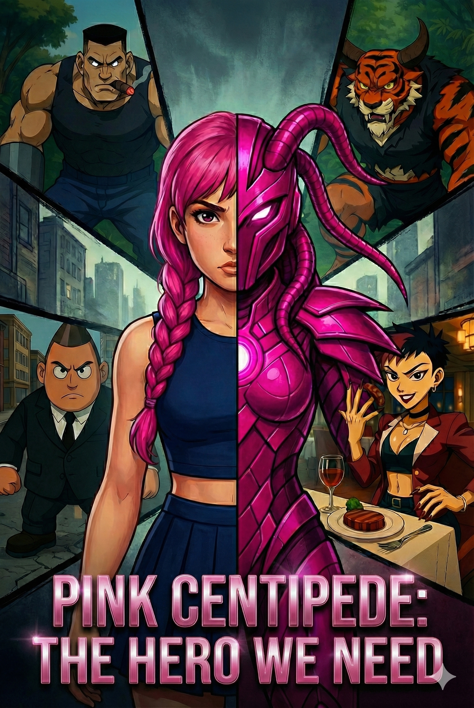

ORIGINAL SERIES / CHARACTER FILE
פינק סנטפיד
כוח ורוד. אמת קבורה. עיירה שזקוקה לגיבורה.
מילי, הגיבורה, חיה אצל דודיה מאז שאביה נעלם לפני 16 שנים. הדבר היחיד שנשאר לה ממנו הוא אבן ישנה. אחרי רעידת אדמה שפוקדת את העיירה, האבן מתרסקת ונשברת — ובתוכה מתגלה תכשיט ורוד בצורת מרבה־רגליים. בלילה התכשיט מתחבר לעמוד השדרה של מילי ונותן לה את היכולת להפוך לגיבורה שתציל את העיירה מהפושעים שפוקדים אותה. תוך כדי ההגנה עליה, מילי מגלה פרטים חדשים על היעלמותו של אביה.
MEET THE CHARACTERS
תיק הדמויות
הכירו את הדמויות הראשונות בעולם של פינק סנטפיד. שאר הסודות מחכים בתוך הסדרה.
THE STORY IS JUST BEGINNING